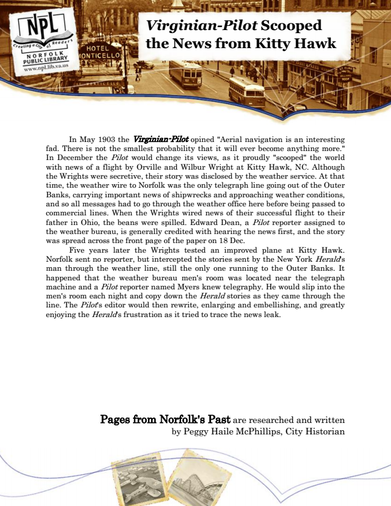

Virginian-Pilot Scooped the News from Kitty Hawk
In May 1903 the Virginian-Pilot opined "Aerial navigation is an interesting fad. There is not the smallest probability that it will ever become anything more." In December the Pilot would change its views, as it proudly "scooped" the world with news of a flight by Orville and Wilbur Wright at Kitty Hawk, NC. Although the Wrights were secretive, their story was disclosed by the weather service. At that time, the weather wire to Norfolk was the only telegraph line going out of the Outer Banks, carrying important news of shipwrecks and approaching weather conditions, and so all messages had to go through the weather office here before being passed to commercial lines. When the Wrights wired news of their successful flight to their father in Ohio, the beans were spilled. Edward Dean, a Pilot reporter assigned to the weather bureau, is generally credited with hearing the news first, and the story was spread across the front page of the paper on 18 Dec.
Five years later the Wrights tested an improved plane at Kitty Hawk. Norfolk sent no reporter, but intercepted the stories sent by the New York Herald's man through the weather line, still the only one running to the Outer Banks. It happened that the weather bureau men's room was located near the telegraph machine and a Pilot reporter named Myers knew telegraphy. He would slip into the men's room each night and copy down the Herald stories as they came through the line. The Pilot's editor would then rewrite, enlarging and embellishing, and greatly enjoying the Herald's frustration as it tried to trace the news leak.
Pages from Norfolk's Past are researched and written by Peggy Haile McPhillips, City Historian